I am an Associate Professor of Political Science at Northwestern University. I’m the author of Persuasion in Parallel and a member of the DeclareDesign team. You can find my CV here.

Books
Blair, Graeme, Alexander Coppock, and Macartan Humphreys. Research Design in the Social Sciences: Declaration, Diagnosis, and Redesign. Princeton University Press, 2023. press.princeton.edu ▸
Coppock, Alexander. Persuasion in Parallel: How Information Changes Minds about Politics. University of Chicago Press, Chicago Studies in American Politics, 2022. doi:10.7208/chicago/9780226821832.001.0001 ▸
Articles
2026
Coppock, Alexander, Donald P. Green, and Ethan Porter. Americans Can Imagine Changing Partisan Affiliation: Evidence from Hypothetical Scenarios. Quarterly Journal of Political Science 21(1): 26–48. doi:10.1108/QJPS-02-2025-0026 ▸
Sarkar, Radha and Alexander Coppock. The effects of religious messages and endorsements on political attitudes: A meta-reanalysis. American Political Science Review. doi:10.1017/S0003055426101695 ▸
2025
Baxter-King, Ryan, Alexander Coppock, Graham Straus, and Lynn Vavreck. Endorsements vs. information: Experimental evidence of backlash and parallel persuasion during the COVID-19 public health crisis. PNAS Nexus 4(6): 1–11. doi:10.1093/pnasnexus/pgaf185 ▸
2024
Barari, Soubhik, Alexander Coppock, Matthew H Graham, and Zoe Padgett. Did Trump’s Indictments Rally His Base? Evidence from the Counterfactual Format. Public Opinion Quarterly 88(4): 1216–1233. doi:10.1093/poq/nfae061 ▸
Hewitt, Luke, David Broockman, Alexander Coppock, Ben M. Tappin, James Slezak, Valerie Coffman, Nathaniel Lubin, and Mohammad Hamidian. How experiments help campaigns persuade voters: Evidence from hundreds of campaigns’ own experiments. American Political Science Review 118(4): 2021–2039. doi:10.1017/S0003055423001387 ▸
2023
Aggarwal, Minali, Jennifer Allen, Alexander Coppock, Dan Frankowski, Solomon Messing, Kelly Zhang, James Barnes, Andrew Beasley, Harry Hantman, and Sylvan Zheng. A 2 million-person, campaign-wide field experiment shows how digital advertising affects voter turnout. Nature Human Behaviour 7(3): 332–341. doi:10.1038/s41562-022-01487-4 ▸
Coppock, Alexander, Kimberly Gross, Ethan Porter, Emily Thorson, and Thomas J. Wood. Conceptual Replication of Four Key Findings about Factual Corrections and Misinformation During the 2020 U.S. Election: Evidence from Panel Survey Experiments. British Journal of Political Science 53(4): 1328–1341. doi:10.1017/S0007123422000631 ▸
Galos, Diana Roxana and Alexander Coppock. Gender Composition Predicts Gender Bias: A Meta-reanalysis of Hiring Discrimination Audit Experiments. Science Advances 9(18): 1–11. doi:10.1126/sciadv.ade7979 ▸
2022
Coppock, Alexander and Donald P. Green. Do Belief Systems Exhibit Dynamic Constraint?. Journal of Politics 84(2): 725–738. doi:10.1086/716294 ▸
Coppock, Alexander, Donald P. Green, and Ethan Porter. Does Digital Advertising Affect Vote Choice? Evidence from a Randomized Field Experiment. Research & Politics 9(1): 1–7. doi:10.1177/20531680221076901 ▸
Coppock, Alexander and Dipin Kaur. Qualitative Imputation of Missing Potential Outcomes. American Journal of Political Science 66(3): 681–695. doi:10.1111/ajps.12697 ▸
Peyton, Kyle, Gregory A. Huber, and Alexander Coppock. The Generalizability of Online Experiments Conducted During The COVID-19 Pandemic. Journal of Experimental Political Science 9(3): 379–394. doi:10.1017/XPS.2021.17 ▸
Schwarz, Susanne and Alexander Coppock. What Have We Learned About Gender From Candidate Choice Experiments? A Meta-analysis of 67 Factorial Survey Experiments. Journal of Politics 84(2): 655–668. doi:10.1086/716290 ▸
2021
Coppock, Alexander. Visualize As You Randomize: Design-based Statistical Graphs for Randomized Experiments. Advances in Experimental Political Science: 320–336. doi:10.1017/9781108777919.022 ▸
Graham, Matthew H. and Alexander Coppock. Asking About Attitude Change. Public Opinion Quarterly 85(1): 28–53. doi:10.1093/poq/nfab009 ▸
Offer-Westort, Molly, Alexander Coppock, and Donald P. Green. Adaptive Experimental Design: Prospects and Applications in Political Science. American Journal of Political Science 65(4): 826–844. doi:10.1111/ajps.12597 ▸
Peer, Limor, Lilla Orr, and Alexander Coppock. Active Maintenance: A Proposal for the Long-term Computational Reproducibility of Scientific Results. PS: Political Science & Politics 54(3): 462–466. doi:10.1017/S1049096521000366 ▸
2020
Blair, Graeme, Alexander Coppock, and Margaret Moor. When to Worry About Sensitivity Bias: Evidence from 30 Years of List Experiments. American Political Science Review 114(4): 1297–1315. doi:10.1017/S0003055420000374 ▸
Coppock, Alexander, Seth J. Hill, and Lynn Vavreck. The Small Effects of Political Advertising are Small Regardless of Context, Message, Sender, or Receiver: Evidence from 59 Real-time Randomized Experiments. Science Advances 6(36): 1–6. doi:10.1126/sciadv.abc4046 ▸
Guess, Andrew and Alexander Coppock. Does Counter-Attitudinal Information Cause Backlash? Results from Three Large Survey Experiments. British Journal of Political Science 50(4): 1497–1515. doi:10.1017/S0007123418000327 ▸
2019
Blair, Graeme, Jasper Cooper, Alexander Coppock, and Macartan Humphreys. Declaring and Diagnosing Research Designs. American Political Science Review 113(3): 838–859. doi:10.1017/S0003055419000194 ▸
Coppock, Alexander. Generalizing from Survey Experiments Conducted on Mechanical Turk: A Replication Approach. Political Science Research and Methods 7(3): 613–628. doi:10.1017/psrm.2018.10 ▸
Coppock, Alexander. Avoiding Post-Treatment Bias in Audit Experiments. Journal of Experimental Political Science 6(1): 1–4. doi:10.1017/XPS.2018.9 ▸
Coppock, Alexander and Oliver A. McClellan. Validating the Demographic, Political, Psychological, and Experimental Results Obtained from a New Source of Online Survey Respondents. Research & Politics 6(1): 1–14. doi:10.1177/2053168018822174 ▸
Yokum, David, Anita Ravishankar, and Alexander Coppock. A Randomized Control Trial Evaluating the Effects of Police Body-worn Cameras. Proceedings of the National Academy of Sciences 116(21): 10329–10332. doi:10.1073/pnas.1814773116 ▸
2018
Coppock, Alexander, Emily Ekins, and David Kirby. The Long-lasting Effects of Newspaper Op-Eds on Public Opinion. Quarterly Journal of Political Science 13(1): 59–87. doi:10.1561/100.00016112 ▸
Coppock, Alexander, Thomas J. Leeper, and Kevin J. Mullinix. Generalizability of Heterogeneous Treatment Effect Estimates Across Samples. Proceedings of the National Academy of Sciences 115(49): 12441–12446. doi:10.1073/pnas.1808083115 ▸
Flores, Alejandro and Alexander Coppock. Do Bilinguals Respond More Favorably to Candidate Advertisements in English or in Spanish?. Political Communication 35(4): 612–633. doi:10.1080/10584609.2018.1426663 ▸
Kirkland, Patricia A. and Alexander Coppock. Candidate Choice Without Party Labels: New Insights from Conjoint Survey Experiments. Political Behavior 40(3): 571–591. doi:10.1007/s11109-017-9414-8 ▸
2017
Coppock, Alexander. Did Shy Trump Supporters Bias the 2016 Polls? Evidence from a Nationally-representative List Experiment. Statistics, Politics and Policy 8(1): 29–40. doi:10.1515/spp-2016-0005 ▸
Coppock, Alexander, Alan S. Gerber, Donald P. Green, and Holger L. Kern. Combining Double Sampling and Bounds to Address Nonignorable Missing Outcomes in Randomized Experiments. Political Analysis 25(2): 188–206. doi:10.1017/pan.2016.6 ▸
2016
Coppock, Alexander and Donald P. Green. Is Voting Habit Forming? New Evidence from Experiments and Regression Discontinuities. American Journal of Political Science 60(4): 1044–1062. doi:10.1111/ajps.12210 ▸
Coppock, Alexander, Andrew Guess, and John Ternovski. When Treatments are Tweets: A Network Mobilization Experiment over Twitter. Political Behavior 38(1): 105–128. doi:10.1007/s11109-015-9308-6 ▸
Green, Donald P., Jonathan S. Krasno, Alexander Coppock, Benjamin D. Farrer, Brandon Lenoir, and Joshua N. Zingher. The Effects of Lawn Signs on Vote Outcomes: Results from Four Randomized Field Experiments. Electoral Studies 41: 143–150. doi:10.1016/j.electstud.2015.12.002 ▸
2015
Aronow, Peter M., Alexander Coppock, Forrest W. Crawford, and Donald P. Green. Combining List Experiment and Direct Question Estimates of Sensitive Behavior Prevalence. Journal of Survey Statistics and Methodology 3(1): 43–66. doi:10.1093/jssam/smu023 ▸
Coppock, Alexander and Donald P. Green. Assessing the Correspondence Between Experimental Results Obtained in the Lab and Field: A Review of Recent Social Science Research. Political Science Research and Methods 3(1): 113–131. doi:10.1017/psrm.2014.10 ▸
2014
Coppock, Alexander. Information Spillovers: Another Look at Experimental Estimates of Legislator Responsiveness. Journal of Experimental Political Science 1(2): 159–169. doi:10.1017/xps.2014.9 ▸
Software
Blair, Graeme, Jasper Cooper, Alexander Coppock, Macartan Humphreys, and Neal Fultz. DeclareDesign: Declare and Diagnose Research Designs. R package version 1.1.1, 2026.
Coppock, Alexander, Alan S. Gerber, Donald P. Green, and Holger L. Kern. attrition: Addressing Nonignorable Attrition with Double Sampling and Bounds. R package version 1.0.0, 2026.
Coppock, Alexander. conjointmatchups: Reshape and Extract Matchups from Forced-Choice Conjoint Experiments. R package version 0.0.0.9000, 2026.
Coppock, Alexander. estimatrTools: Data-Driven Covariate Adjustment for the ‘estimatr’ Estimators. R package version 0.1.0, 2026.
Coppock, Alexander. randomizr: Easy-to-Use Tools for Common Forms of Random Assignment and Sampling. R package version 2.0.1, 2026.
Coppock, Alexander. ri2: Randomization Inference for Randomized Experiments. R package version 0.5.0, 2026.
Coppock, Alexander. vayr: Extensions for ‘ggplot2’ to Visualize as You Randomize. R package version 1.1.0, 2026.
Blair, Graeme, Jasper Cooper, Alexander Coppock, Macartan Humphreys, and Luke Sonnet. estimatr: Fast Estimators for Design-Based Inference. R package version 1.0.6, 2025.
Coppock, Alexander. excheckr: Tools for Exploring and Checking Experimental Data. R package version 0.1.0, 2025.
Coppock, Alexander. metaprep: Tidy Preparation of Dependent Effect Estimates for Meta-Analysis. R package version 0.4.1, 2025.
Blair, Graeme, Jasper Cooper, Alexander Coppock, Macartan Humphreys, Aaron Rudkin, and Neal Fultz. fabricatr: Imagine Your Data Before You Collect It. R package version 1.0.2, 2024.
Book reviews
Coppock, Alexander. The Effects of Party Cues Are Not the Effects of Partisanship. Political Science Quarterly: 1–4, 2025. doi:10.1093/psquar/qqaf037 ▸
Coppock, Alexander. Review of: Paul J. Lavrakas, Michael W. Traugott, Courtney Kennedy, Allyson L. Holbrook, Edith D. de Leeuw, and Brady T. West, eds. Experimental Methods in Survey Research: Techniques That Combine Random Sampling with Random Assignment. Public Opinion Quarterly 84(4): 1014–1016, 2020. doi:10.1093/poq/nfaa053 ▸
Crowdsourced collaborations
Brodeur, Abel and 375 coauthors. Reproducibility and Robustness of Economics and Political Science Research. Nature 652: 151–156, 2026. ▸
Schweinsberg, Martin and 161 coauthors. Same data, different conclusions: Radical dispersion in empirical results when independent analysts operationalize and test the same hypothesis. Organizational Behavior and Human Decision Processes 165: 228–249, 2021. ▸
Dissertation
Coppock, Alexander. Positive, Small, Homogeneous, and Durable: Political Persuasion in Response to Information. PhD dissertation, Columbia University, 2016. ▸